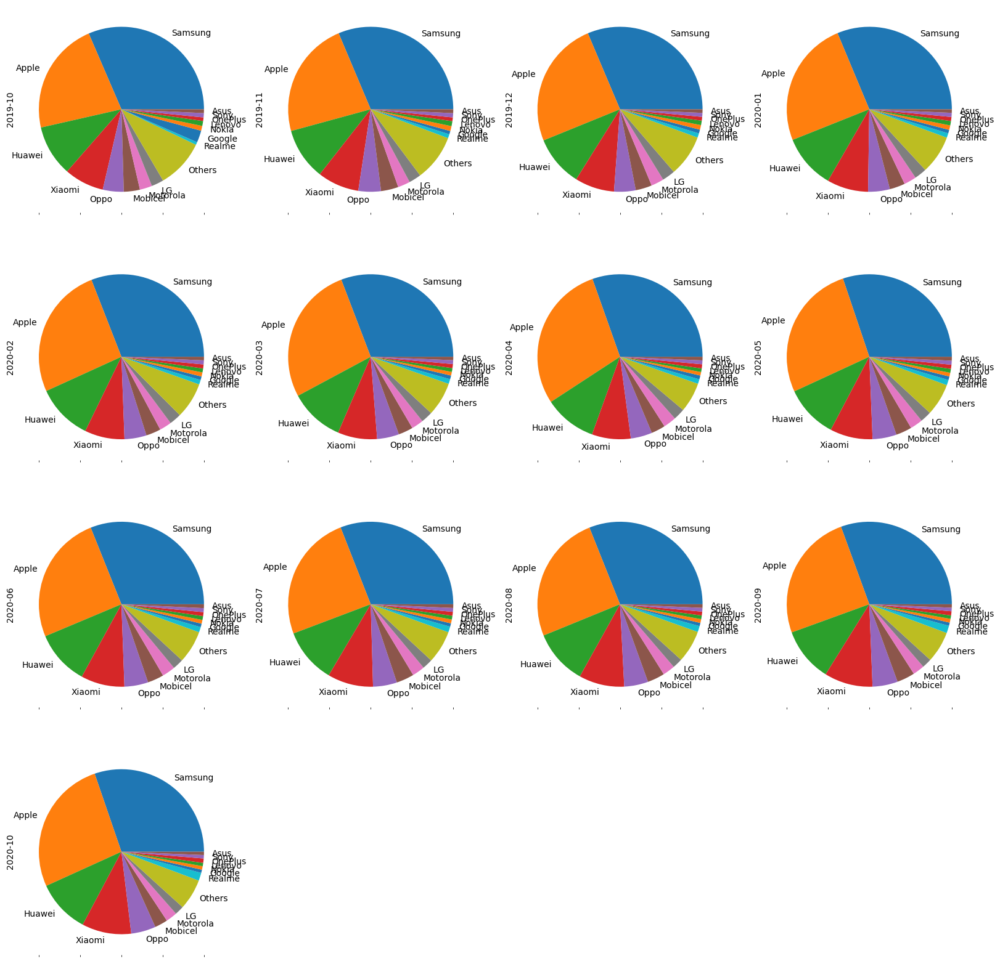
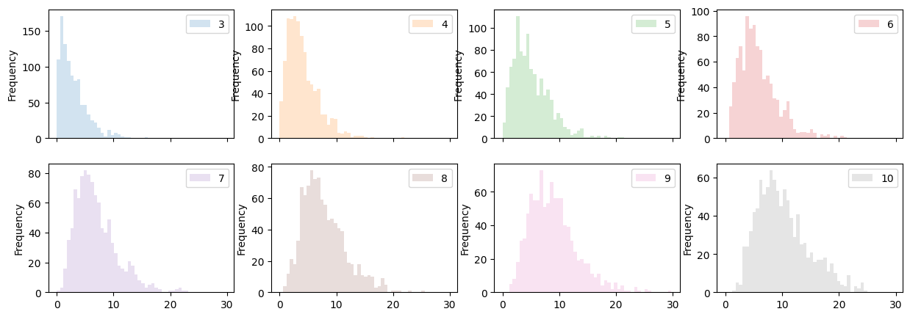
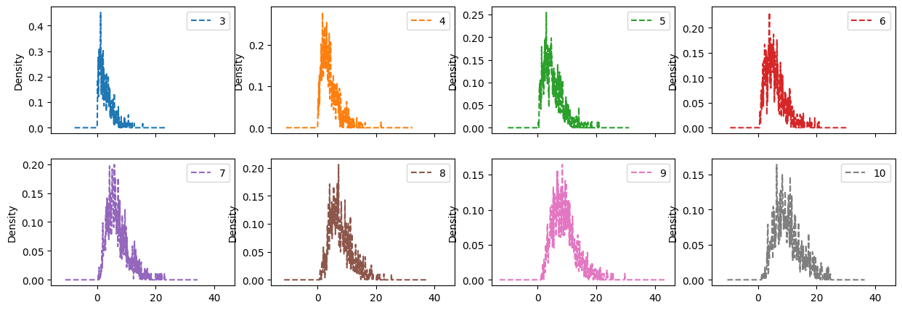

Pie chart
- 각 회사별 비율을 표시하여 그리기
df = pd.read_csv('https://raw.githubusercontent.com/kalilurrahman/datasets/main/mobilephonemktshare2020.csv')
df.head()| Date | Samsung | Apple | Huawei | Xiaomi | Oppo | Mobicel | Motorola | LG | Others | Realme | Nokia | Lenovo | OnePlus | Sony | Asus | ||
|---|---|---|---|---|---|---|---|---|---|---|---|---|---|---|---|---|---|
| 0 | 2019-10 | 31.49 | 22.09 | 10.02 | 7.79 | 4.10 | 3.15 | 2.41 | 2.40 | 9.51 | 0.54 | 2.35 | 0.95 | 0.96 | 0.70 | 0.84 | 0.74 |
| 1 | 2019-11 | 31.36 | 22.90 | 10.18 | 8.16 | 4.42 | 3.41 | 2.40 | 2.40 | 9.10 | 0.78 | 0.66 | 0.97 | 0.97 | 0.73 | 0.83 | 0.75 |
| 2 | 2019-12 | 31.37 | 24.79 | 9.95 | 7.73 | 4.23 | 3.19 | 2.50 | 2.54 | 8.13 | 0.84 | 0.75 | 0.90 | 0.87 | 0.74 | 0.77 | 0.70 |
| 3 | 2020-01 | 31.29 | 24.76 | 10.61 | 8.10 | 4.25 | 3.02 | 2.42 | 2.40 | 7.55 | 0.88 | 0.69 | 0.88 | 0.86 | 0.79 | 0.80 | 0.69 |
| 4 | 2020-02 | 30.91 | 25.89 | 10.98 | 7.80 | 4.31 | 2.89 | 2.36 | 2.34 | 7.06 | 0.89 | 0.70 | 0.81 | 0.77 | 0.78 | 0.80 | 0.69 |
- 아래와 같은 형태는 우리가 원하는 형태의 시각화가 아님.
문제 1 : 날짜인덱스 x
문제 2: 날짜 인덱스 O, 목적 x
문제 3 : 드디어 정상적인 플랏, but 특정 기간만 표시됨
완성
array([[<Axes: ylabel='2019-10'>, <Axes: ylabel='2019-11'>,
<Axes: ylabel='2019-12'>, <Axes: ylabel='2020-01'>],
[<Axes: ylabel='2020-02'>, <Axes: ylabel='2020-03'>,
<Axes: ylabel='2020-04'>, <Axes: ylabel='2020-05'>],
[<Axes: ylabel='2020-06'>, <Axes: ylabel='2020-07'>,
<Axes: ylabel='2020-08'>, <Axes: ylabel='2020-09'>],
[<Axes: ylabel='2020-10'>, <Axes: >, <Axes: >, <Axes: >]],
dtype=object)
Boxplot
예제 1 (matplotlib)
- 월별 점유율의 차이를 구한 후 boxplot을 그려보자
| Samsung | Apple | Huawei | Xiaomi | Oppo | Mobicel | Motorola | LG | Others | Realme | Nokia | Lenovo | OnePlus | Sony | Asus | ||
|---|---|---|---|---|---|---|---|---|---|---|---|---|---|---|---|---|
| Date | ||||||||||||||||
| 2019-11 | -0.13 | 0.81 | 0.16 | 0.37 | 0.32 | 0.26 | -0.01 | 0.00 | -0.41 | 0.24 | -1.69 | 0.02 | 0.01 | 0.03 | -0.01 | 0.01 |
| 2019-12 | 0.01 | 1.89 | -0.23 | -0.43 | -0.19 | -0.22 | 0.10 | 0.14 | -0.97 | 0.06 | 0.09 | -0.07 | -0.10 | 0.01 | -0.06 | -0.05 |
| 2020-01 | -0.08 | -0.03 | 0.66 | 0.37 | 0.02 | -0.17 | -0.08 | -0.14 | -0.58 | 0.04 | -0.06 | -0.02 | -0.01 | 0.05 | 0.03 | -0.01 |
| 2020-02 | -0.38 | 1.13 | 0.37 | -0.30 | 0.06 | -0.13 | -0.06 | -0.06 | -0.49 | 0.01 | 0.01 | -0.07 | -0.09 | -0.01 | 0.00 | 0.00 |
| 2020-03 | -0.11 | 1.14 | -0.28 | -0.10 | -0.01 | -0.02 | -0.01 | -0.06 | -0.43 | 0.04 | 0.03 | -0.09 | -0.03 | 0.00 | -0.04 | -0.03 |
| 2020-04 | -0.39 | 1.76 | -0.42 | -0.10 | -0.10 | -0.12 | 0.16 | 0.00 | -0.79 | -0.03 | 0.02 | -0.03 | -0.03 | 0.02 | 0.00 | 0.04 |
| 2020-05 | -0.23 | -2.07 | 0.11 | 0.76 | 0.50 | 0.37 | -0.05 | -0.09 | 0.47 | 0.14 | -0.05 | 0.04 | 0.06 | 0.01 | 0.02 | 0.06 |
| 2020-06 | 0.88 | -1.46 | 0.30 | 0.19 | -0.05 | 0.06 | 0.11 | -0.08 | 0.08 | 0.00 | -0.02 | 0.01 | -0.02 | -0.04 | 0.00 | -0.01 |
| 2020-07 | -0.11 | -0.44 | 0.06 | 0.39 | 0.04 | 0.28 | -0.12 | -0.08 | 0.02 | 0.09 | -0.03 | 0.02 | -0.01 | -0.01 | -0.03 | -0.03 |
| 2020-08 | 0.09 | 0.33 | -0.02 | -0.04 | 0.00 | -0.08 | -0.06 | -0.07 | -0.10 | 0.05 | -0.02 | -0.02 | -0.02 | -0.01 | -0.02 | -0.02 |
| 2020-09 | -0.47 | -0.17 | -0.15 | 0.59 | 0.25 | 0.12 | -0.12 | -0.08 | -0.19 | 0.27 | 0.00 | 0.00 | -0.05 | 0.06 | -0.04 | -0.03 |
| 2020-10 | -0.32 | 1.55 | -0.14 | 0.18 | -0.11 | -0.96 | -0.06 | -0.09 | -0.08 | 0.10 | 0.00 | -0.05 | -0.02 | 0.04 | -0.02 | -0.03 |
- 삼성의 경우는 점유율 변동이 거의 없다.
- 파이플랏으로 변동폭을 잡기 어려울 때는 아래처럼 변동의 차이를 boxplot로 그려 확인할 수 있다.
- 음수값에 값이 몰려있으먄 점유율이 전체적으로 떨어지고 있다는 판단을 내릴 수 있다.
- 또한, 중앙값을 보고 전체적인 추세를 짐작할 수 있다.
예제 2 (plotly)
- 위와 동일한 그림을 plotly backend로 그릴 수 있음
회사별 색깔 추가
예제 3 (plotly)
| total_bill | tip | sex | smoker | day | time | size | |
|---|---|---|---|---|---|---|---|
| 0 | 16.99 | 1.01 | Female | No | Sun | Dinner | 2 |
| 1 | 10.34 | 1.66 | Male | No | Sun | Dinner | 3 |
| 2 | 21.01 | 3.50 | Male | No | Sun | Dinner | 3 |
| 3 | 23.68 | 3.31 | Male | No | Sun | Dinner | 2 |
| 4 | 24.59 | 3.61 | Female | No | Sun | Dinner | 4 |
팁은 대체로 얼마나 받을까?
시간대, 성별 구분
- 점심은 남자가 더 많이 받는 것 같구, 저녁은 비슷하다. (중앙값을 보고 판단)
- boxplot의 다점은 히스토그램처럼 해당 구간에 점들의 밀집도를 보기 힘들다는 것이다. 즉, 전체적인 경향만 알 수 있다.
- point를 그려본 결과 여자보다 남자가 팁을 받는 횟수 자체가 많다. (얼마를 주는지는 알 수 없지만….)
- boxplot의 아웃라이어가 사라지고, 데이터를 더 리치하게 볼 수 있다!
시간대 + 성별 + 요일
시간대 + 성별 + 요일 + 흡연유무
summary
- tidydata를 이용하면 생각한데로 데이터를 만들기 쉽다.
- matplotlib는 위와 같은 형태를 그리는 것 자체가 불가능
hist, kde, density
- 시뮬레이션 예제
정규분포를 만들어서 제곱한 뒤에 3,4,10개 까지더함 \(\to\) 카이제곱분포
즉, 자유도가 “3, 4, 5,… 10” 인 카이제곱분포를 생성하는것
- 자유도가 3인 카이제곱분포 구현
array([[1.32712064, 1.02020613, 0.12546098],
[1.29628394, 0.30477085, 2.60044628]])- numpy에서 axis=1, size(x,y) 에서 y라고 생각하자.
| 3 | 4 | 5 | 6 | 7 | 8 | 9 | 10 | |
|---|---|---|---|---|---|---|---|---|
| 0 | 3.131782 | 3.799587 | 4.367718 | 4.174949 | 4.220868 | 5.182174 | 13.918989 | 8.697758 |
| 1 | 4.919353 | 2.863579 | 8.008873 | 2.463391 | 3.333672 | 6.434516 | 6.411076 | 14.971604 |
| 2 | 6.319778 | 2.647296 | 12.564839 | 8.338734 | 11.085338 | 11.028462 | 12.520885 | 6.378558 |
| 3 | 10.749813 | 7.488667 | 2.385099 | 8.601818 | 5.084592 | 7.245780 | 12.197176 | 3.425062 |
| 4 | 9.728961 | 7.867187 | 2.141046 | 3.887322 | 3.612230 | 17.379146 | 6.672639 | 11.588978 |
| ... | ... | ... | ... | ... | ... | ... | ... | ... |
| 995 | 2.010672 | 1.011591 | 0.520843 | 8.657298 | 7.497587 | 9.682624 | 9.749848 | 7.295103 |
| 996 | 2.536367 | 6.394866 | 9.610891 | 13.364672 | 9.830351 | 4.794620 | 11.120197 | 9.338527 |
| 997 | 2.257593 | 3.964642 | 4.799542 | 3.652190 | 12.973491 | 4.314882 | 11.256588 | 17.050448 |
| 998 | 2.688144 | 1.001071 | 7.810500 | 10.765872 | 4.939445 | 13.563732 | 14.718161 | 6.664523 |
| 999 | 2.594826 | 3.803468 | 6.070162 | 4.026470 | 12.712965 | 10.211044 | 10.881731 | 3.691633 |
1000 rows × 8 columns
## hist
subplot
array([[<Axes: ylabel='Frequency'>, <Axes: ylabel='Frequency'>,
<Axes: ylabel='Frequency'>, <Axes: ylabel='Frequency'>],
[<Axes: ylabel='Frequency'>, <Axes: ylabel='Frequency'>,
<Axes: ylabel='Frequency'>, <Axes: ylabel='Frequency'>]],
dtype=object)
kde plot
- bw_method : 조금 지글지글한? 아래 그래픛처럼 스무딩 효과를 얼만큼 줄 것인지 결정한다.
array([[<Axes: ylabel='Density'>, <Axes: ylabel='Density'>,
<Axes: ylabel='Density'>, <Axes: ylabel='Density'>],
[<Axes: ylabel='Density'>, <Axes: ylabel='Density'>,
<Axes: ylabel='Density'>, <Axes: ylabel='Density'>]], dtype=object)
예제 2 (hist)
area plot
- 주로 다루는 plot은 아님
matplotlib
df = pd.read_csv('https://raw.githubusercontent.com/kalilurrahman/datasets/main/mobilephonemktshare2020.csv')
df.head()| Date | Samsung | Apple | Huawei | Xiaomi | Oppo | Mobicel | Motorola | LG | Others | Realme | Nokia | Lenovo | OnePlus | Sony | Asus | ||
|---|---|---|---|---|---|---|---|---|---|---|---|---|---|---|---|---|---|
| 0 | 2019-10 | 31.49 | 22.09 | 10.02 | 7.79 | 4.10 | 3.15 | 2.41 | 2.40 | 9.51 | 0.54 | 2.35 | 0.95 | 0.96 | 0.70 | 0.84 | 0.74 |
| 1 | 2019-11 | 31.36 | 22.90 | 10.18 | 8.16 | 4.42 | 3.41 | 2.40 | 2.40 | 9.10 | 0.78 | 0.66 | 0.97 | 0.97 | 0.73 | 0.83 | 0.75 |
| 2 | 2019-12 | 31.37 | 24.79 | 9.95 | 7.73 | 4.23 | 3.19 | 2.50 | 2.54 | 8.13 | 0.84 | 0.75 | 0.90 | 0.87 | 0.74 | 0.77 | 0.70 |
| 3 | 2020-01 | 31.29 | 24.76 | 10.61 | 8.10 | 4.25 | 3.02 | 2.42 | 2.40 | 7.55 | 0.88 | 0.69 | 0.88 | 0.86 | 0.79 | 0.80 | 0.69 |
| 4 | 2020-02 | 30.91 | 25.89 | 10.98 | 7.80 | 4.31 | 2.89 | 2.36 | 2.34 | 7.06 | 0.89 | 0.70 | 0.81 | 0.77 | 0.78 | 0.80 | 0.69 |
- 시간에 따른 점유율의 변화를 보기에 적절한 것 같다? \(\to\) 내 생각엔 그렇지 않음..
- 각 회사의 y축 폭은 점유율을 뜻함.
plotly
예제 3
- 위키의 테이블 크롤링
df=pd.read_html('https://ko.wikipedia.org/wiki/%EB%8C%80%ED%95%9C%EB%AF%BC%EA%B5%AD%EC%9D%98_%EC%9D%B8%EA%B5%AC')[19]
df.head()| 행정구역별 | 2021. 06 | 2015 | 2010 | 2005 | 2000 | ||||||
|---|---|---|---|---|---|---|---|---|---|---|---|
| 행정구역별 | 비율 | 인구 | 비율 | 인구 | 비율 | 인구 | 비율 | 인구 | 비율 | 인구 | |
| 0 | 전국 | 16.7 | 8652198 | 13.1 | 6775101 | 10.9 | 5506352 | 8.9 | 4324524 | 7.0 | 3355614 |
| 1 | 서울특별시 | 16.4 | 1568769 | 12.6 | 1262436 | 9.7 | 1002770 | 7.2 | 731349 | 5.4 | 558566 |
| 2 | 부산광역시 | 19.8 | 666644 | 14.6 | 514630 | 11.3 | 401784 | 8.3 | 302784 | 6.0 | 229075 |
| 3 | 대구광역시 | 17.0 | 408235 | 12.7 | 316122 | 10.0 | 252084 | 7.8 | 195419 | 5.9 | 149045 |
| 4 | 인천광역시 | 14.4 | 422658 | 10.7 | 312905 | 8.6 | 237805 | 6.9 | 178602 | 5.4 | 138316 |
- 끔직할 정도의 데이터이다.
- 전국 단위 제거
| 행정구역별 | 2021. 06 | 2015 | 2010 | 2005 | 2000 | ||||||
|---|---|---|---|---|---|---|---|---|---|---|---|
| 행정구역별 | 비율 | 인구 | 비율 | 인구 | 비율 | 인구 | 비율 | 인구 | 비율 | 인구 | |
| 1 | 서울특별시 | 16.4 | 1568769 | 12.6 | 1262436 | 9.7 | 1002770 | 7.2 | 731349 | 5.4 | 558566 |
| 2 | 부산광역시 | 19.8 | 666644 | 14.6 | 514630 | 11.3 | 401784 | 8.3 | 302784 | 6.0 | 229075 |
| 3 | 대구광역시 | 17.0 | 408235 | 12.7 | 316122 | 10.0 | 252084 | 7.8 | 195419 | 5.9 | 149045 |
| 4 | 인천광역시 | 14.4 | 422658 | 10.7 | 312905 | 8.6 | 237805 | 6.9 | 178602 | 5.4 | 138316 |
| 5 | 광주광역시 | 14.5 | 208879 | 11.3 | 166389 | 9.0 | 130457 | 7.1 | 99389 | 5.6 | 77325 |
| 6 | 대전광역시 | 14.8 | 215997 | 10.9 | 165528 | 8.7 | 130245 | 6.9 | 99811 | 5.5 | 75769 |
| 7 | 울산광역시 | 13.1 | 147811 | 8.8 | 103205 | 6.8 | 76800 | 5.3 | 57797 | 4.0 | 42119 |
| 8 | 세종특별자치시 | 10.0 | 36194 | 10.6 | 22399 | - | - | - | - | - | - |
| 9 | 경기도 | 13.5 | 1825846 | 10.5 | 1318882 | 8.7 | 1022456 | 7.1 | 755511 | 5.7 | 524807 |
| 10 | 강원도 | 21.2 | 325579 | 16.9 | 261671 | 14.8 | 226505 | 12.1 | 183471 | 9.3 | 143945 |
| 11 | 충청북도 | 18.4 | 294530 | 14.8 | 234813 | 13.2 | 204470 | 11.3 | 168670 | 9.1 | 136160 |
| 12 | 충청남도 | 19.5 | 412504 | 16.4 | 341214 | 14.9 | 308556 | 13.3 | 261800 | 11.2 | 215059 |
| 13 | 전라북도 | 21.8 | 391178 | 17.8 | 333524 | 15.2 | 284373 | 12.9 | 243721 | 10.3 | 205807 |
| 14 | 전라남도 | 23.9 | 440014 | 20.5 | 391837 | 18.3 | 350900 | 15.6 | 306439 | 11.9 | 254370 |
| 15 | 경상북도 | 22.2 | 585088 | 17.7 | 479634 | 15.6 | 418858 | 13.4 | 360068 | 10.7 | 300614 |
| 16 | 경상남도 | 17.9 | 594154 | 13.8 | 464019 | 11.8 | 388648 | 10.2 | 323898 | 8.4 | 261303 |
| 17 | 제주특별자치도 | 16.0 | 108118 | 13.8 | 85893 | 12.2 | 69641 | 10.0 | 55795 | 8.0 | 43334 |
- 컬럼확인 결괴 멀티 인덱스임을 확인
MultiIndex([( '행정구역별', '행정구역별'),
('2021. 06', '비율'),
('2021. 06', '인구'),
( '2015', '비율'),
( '2015', '인구'),
( '2010', '비율'),
( '2010', '인구'),
( '2005', '비율'),
( '2005', '인구'),
( '2000', '비율'),
( '2000', '인구')],
)| 2021. 06 | 2015 | 2010 | 2005 | 2000 | ||||||
|---|---|---|---|---|---|---|---|---|---|---|
| 비율 | 인구 | 비율 | 인구 | 비율 | 인구 | 비율 | 인구 | 비율 | 인구 | |
| (행정구역별, 행정구역별) | ||||||||||
| 서울특별시 | 16.4 | 1568769 | 12.6 | 1262436 | 9.7 | 1002770 | 7.2 | 731349 | 5.4 | 558566 |
| 부산광역시 | 19.8 | 666644 | 14.6 | 514630 | 11.3 | 401784 | 8.3 | 302784 | 6.0 | 229075 |
| 대구광역시 | 17.0 | 408235 | 12.7 | 316122 | 10.0 | 252084 | 7.8 | 195419 | 5.9 | 149045 |
| 인천광역시 | 14.4 | 422658 | 10.7 | 312905 | 8.6 | 237805 | 6.9 | 178602 | 5.4 | 138316 |
| 광주광역시 | 14.5 | 208879 | 11.3 | 166389 | 9.0 | 130457 | 7.1 | 99389 | 5.6 | 77325 |
| 2000 | 2005 | 2010 | 2015 | 2021. 06 | ||
|---|---|---|---|---|---|---|
| (행정구역별, 행정구역별) | ||||||
| 서울특별시 | 비율 | 5.4 | 7.2 | 9.7 | 12.6 | 16.4 |
| 인구 | 558566 | 731349 | 1002770 | 1262436.0 | 1568769.0 | |
| 부산광역시 | 비율 | 6.0 | 8.3 | 11.3 | 14.6 | 19.8 |
| 인구 | 229075 | 302784 | 401784 | 514630.0 | 666644.0 | |
| 대구광역시 | 비율 | 5.9 | 7.8 | 10.0 | 12.7 | 17.0 |
| 인구 | 149045 | 195419 | 252084 | 316122.0 | 408235.0 | |
| 인천광역시 | 비율 | 5.4 | 6.9 | 8.6 | 10.7 | 14.4 |
| 인구 | 138316 | 178602 | 237805 | 312905.0 | 422658.0 | |
| 광주광역시 | 비율 | 5.6 | 7.1 | 9.0 | 11.3 | 14.5 |
| 인구 | 77325 | 99389 | 130457 | 166389.0 | 208879.0 | |
| 대전광역시 | 비율 | 5.5 | 6.9 | 8.7 | 10.9 | 14.8 |
| 인구 | 75769 | 99811 | 130245 | 165528.0 | 215997.0 | |
| 울산광역시 | 비율 | 4.0 | 5.3 | 6.8 | 8.8 | 13.1 |
| 인구 | 42119 | 57797 | 76800 | 103205.0 | 147811.0 | |
| 세종특별자치시 | 비율 | - | - | - | 10.6 | 10.0 |
| 인구 | - | - | - | 22399.0 | 36194.0 | |
| 경기도 | 비율 | 5.7 | 7.1 | 8.7 | 10.5 | 13.5 |
| 인구 | 524807 | 755511 | 1022456 | 1318882.0 | 1825846.0 | |
| 강원도 | 비율 | 9.3 | 12.1 | 14.8 | 16.9 | 21.2 |
| 인구 | 143945 | 183471 | 226505 | 261671.0 | 325579.0 | |
| 충청북도 | 비율 | 9.1 | 11.3 | 13.2 | 14.8 | 18.4 |
| 인구 | 136160 | 168670 | 204470 | 234813.0 | 294530.0 | |
| 충청남도 | 비율 | 11.2 | 13.3 | 14.9 | 16.4 | 19.5 |
| 인구 | 215059 | 261800 | 308556 | 341214.0 | 412504.0 | |
| 전라북도 | 비율 | 10.3 | 12.9 | 15.2 | 17.8 | 21.8 |
| 인구 | 205807 | 243721 | 284373 | 333524.0 | 391178.0 | |
| 전라남도 | 비율 | 11.9 | 15.6 | 18.3 | 20.5 | 23.9 |
| 인구 | 254370 | 306439 | 350900 | 391837.0 | 440014.0 | |
| 경상북도 | 비율 | 10.7 | 13.4 | 15.6 | 17.7 | 22.2 |
| 인구 | 300614 | 360068 | 418858 | 479634.0 | 585088.0 | |
| 경상남도 | 비율 | 8.4 | 10.2 | 11.8 | 13.8 | 17.9 |
| 인구 | 261303 | 323898 | 388648 | 464019.0 | 594154.0 | |
| 제주특별자치도 | 비율 | 8.0 | 10.0 | 12.2 | 13.8 | 16.0 |
| 인구 | 43334 | 55795 | 69641 | 85893.0 | 108118.0 |
| (행정구역별, 행정구역별) | level_1 | 2000 | 2005 | 2010 | 2015 | 2021. 06 | |
|---|---|---|---|---|---|---|---|
| 0 | 서울특별시 | 비율 | 5.4 | 7.2 | 9.7 | 12.6 | 16.4 |
| 1 | 서울특별시 | 인구 | 558566 | 731349 | 1002770 | 1262436.0 | 1568769.0 |
| 2 | 부산광역시 | 비율 | 6.0 | 8.3 | 11.3 | 14.6 | 19.8 |
| 3 | 부산광역시 | 인구 | 229075 | 302784 | 401784 | 514630.0 | 666644.0 |
| 4 | 대구광역시 | 비율 | 5.9 | 7.8 | 10.0 | 12.7 | 17.0 |
- 비율 시각화가 목적이므로 비율만 선택하자.
| (행정구역별, 행정구역별) | 서울특별시 | 부산광역시 | 대구광역시 | 인천광역시 | 광주광역시 | 대전광역시 | 울산광역시 | 세종특별자치시 | 경기도 | 강원도 | 충청북도 | 충청남도 | 전라북도 | 전라남도 | 경상북도 | 경상남도 | 제주특별자치도 |
|---|---|---|---|---|---|---|---|---|---|---|---|---|---|---|---|---|---|
| 2000 | 5.4 | 6.0 | 5.9 | 5.4 | 5.6 | 5.5 | 4.0 | - | 5.7 | 9.3 | 9.1 | 11.2 | 10.3 | 11.9 | 10.7 | 8.4 | 8.0 |
| 2005 | 7.2 | 8.3 | 7.8 | 6.9 | 7.1 | 6.9 | 5.3 | - | 7.1 | 12.1 | 11.3 | 13.3 | 12.9 | 15.6 | 13.4 | 10.2 | 10.0 |
| 2010 | 9.7 | 11.3 | 10.0 | 8.6 | 9.0 | 8.7 | 6.8 | - | 8.7 | 14.8 | 13.2 | 14.9 | 15.2 | 18.3 | 15.6 | 11.8 | 12.2 |
| 2015 | 12.6 | 14.6 | 12.7 | 10.7 | 11.3 | 10.9 | 8.8 | 10.6 | 10.5 | 16.9 | 14.8 | 16.4 | 17.8 | 20.5 | 17.7 | 13.8 | 13.8 |
| 2021. 06 | 16.4 | 19.8 | 17.0 | 14.4 | 14.5 | 14.8 | 13.1 | 10.0 | 13.5 | 21.2 | 18.4 | 19.5 | 21.8 | 23.9 | 22.2 | 17.9 | 16.0 |
applymap
- 전처리
시각화
- 한글이 깨저서 나오지만 신경쓰지말장
plotly
| (행정구역별, 행정구역별) | index | 서울특별시 | 부산광역시 | 대구광역시 | 인천광역시 | 광주광역시 | 대전광역시 | 울산광역시 | 세종특별자치시 | 경기도 | 강원도 | 충청북도 | 충청남도 | 전라북도 | 전라남도 | 경상북도 | 경상남도 | 제주특별자치도 |
|---|---|---|---|---|---|---|---|---|---|---|---|---|---|---|---|---|---|---|
| 0 | 2000 | 5.4 | 6.0 | 5.9 | 5.4 | 5.6 | 5.5 | 4.0 | NaN | 5.7 | 9.3 | 9.1 | 11.2 | 10.3 | 11.9 | 10.7 | 8.4 | 8.0 |
| 1 | 2005 | 7.2 | 8.3 | 7.8 | 6.9 | 7.1 | 6.9 | 5.3 | NaN | 7.1 | 12.1 | 11.3 | 13.3 | 12.9 | 15.6 | 13.4 | 10.2 | 10.0 |
| 2 | 2010 | 9.7 | 11.3 | 10.0 | 8.6 | 9.0 | 8.7 | 6.8 | NaN | 8.7 | 14.8 | 13.2 | 14.9 | 15.2 | 18.3 | 15.6 | 11.8 | 12.2 |
| 3 | 2015 | 12.6 | 14.6 | 12.7 | 10.7 | 11.3 | 10.9 | 8.8 | 10.6 | 10.5 | 16.9 | 14.8 | 16.4 | 17.8 | 20.5 | 17.7 | 13.8 | 13.8 |
| 4 | 2021. 06 | 16.4 | 19.8 | 17.0 | 14.4 | 14.5 | 14.8 | 13.1 | 10.0 | 13.5 | 21.2 | 18.4 | 19.5 | 21.8 | 23.9 | 22.2 | 17.9 | 16.0 |
| index | (행정구역별, 행정구역별) | value | |
|---|---|---|---|
| 0 | 2000 | 서울특별시 | 5.4 |
| 1 | 2005 | 서울특별시 | 7.2 |
| 2 | 2010 | 서울특별시 | 9.7 |
| 3 | 2015 | 서울특별시 | 12.6 |
| 4 | 2021. 06 | 서울특별시 | 16.4 |
| ... | ... | ... | ... |
| 80 | 2000 | 제주특별자치도 | 8.0 |
| 81 | 2005 | 제주특별자치도 | 10.0 |
| 82 | 2010 | 제주특별자치도 | 12.2 |
| 83 | 2015 | 제주특별자치도 | 13.8 |
| 84 | 2021. 06 | 제주특별자치도 | 16.0 |
85 rows × 3 columns